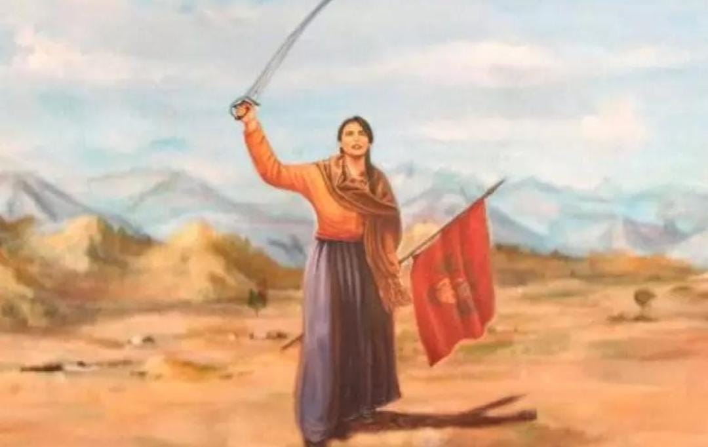
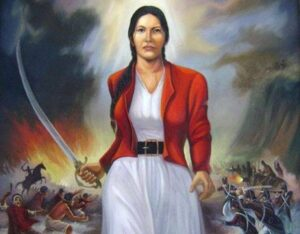
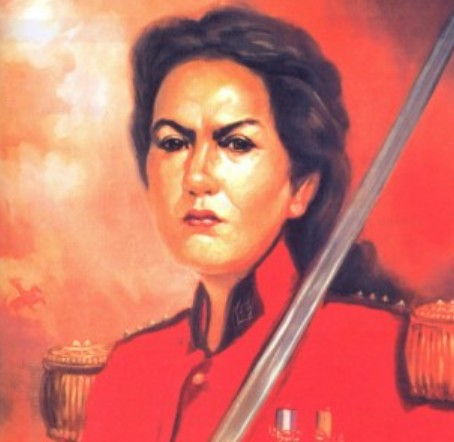
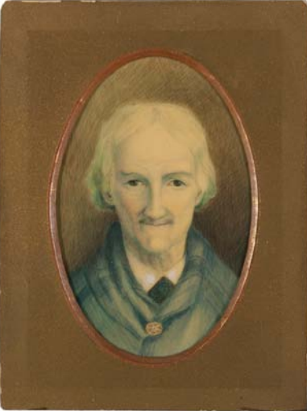

Su legado historico
Macacha Güemes dejó un importante legado en la historia argentina. Su participación demuestra que las mujeres también fueron protagonistas durante el proceso de Independencia.
Macacha Güemes fue una figura importante durante la lucha por la independencia. Colaboró con su hermano Martín Miguel de Güemes y participó en tareas de organización, comunicación y apoyo a la causa. Su compromiso dejó una huella importante en la historia de Salta.

Su importancia en la actualidad
Actualmente Macacha es reconocida especialmente en Salta como una de las mujeres importantes de la historia de la Independencia.
Su historia permite conocer una parte de nuestro pasado y valorar la participación de las mujeres en la construcción de la Argentina.
Legado cultural y social
Su nombre está presente en calles, escuelas, monumentos y diferentes espacios públicos. Estos homenajes permiten mantener viva su memoria.
También es un ejemplo de compromiso, valentía y participación. Su historia demuestra que existen diferentes formas de colaborar con una causa.
Curiosidades
- Su nombre completo era María Magdalena Dámasa Güemes de Tejada.
- Era hermana de Martín Miguel de Güemes.
- Nació y murió en Salta.
- Participó en las gestiones relacionadas con el Pacto de los Cerrillos.
- Es una de las mujeres salteñas más reconocidas de la historia argentina.
Frases y pensamientos
No existen muchas frases documentadas de Macacha Güemes. Por eso, es importante no atribuirle frases sin una fuente histórica confiable.
Una idea que representa su legado es la importancia de participar, ayudar y defender aquello en lo que se cree.
Galería de imágenes





Conclusion
Macacha Güemes fue una mujer fundamental para comprender la historia de la Independencia argentina. Su participación fue diferente a la de los soldados, pero tuvo importancia en la organización, comunicación y política.
Recordar su historia permite reconocer el papel de las mujeres y comprender que la construcción de nuestro país fue realizada por muchas personas.